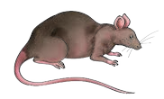
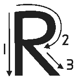
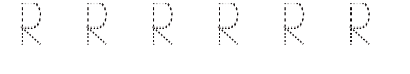

Lesson 14: Letter R
Lesson 14
Letter R

Trace the uppercase letter R or write dot six, then dot one, dot two, dot three, and dot five.


Copy or write letter R
Copy or write letters R and r
Lesson 14

Trace the uppercase letter R or write dot six, then dot one, dot two, dot three, and dot five.


Copy or write letter R
Copy or write letters R and r